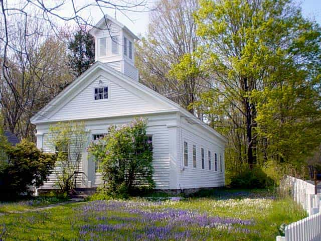
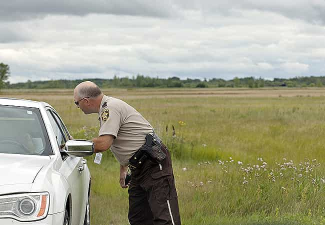

I grew up in the absolute middle of nowhere. Dirt roads, fields of corn and soybeans as far as the eye can see. Hotter than hell during the summer and colder than shit during the winter months.
Let me dispel some myths about the country in America.
This one is a common meme in the media and liberals. Take note: fat, white women rule the country and the small towns. Men still usually make up the formal leadership in small towns and rural power structures, but women pull the strings of power.
I made the argument in a political science class about sex and politics that men have the authority (formal power) in the country, but women exert the power (they have the ability to influence the authority). This was back in my blue-pill days. It did not go over well. Like the frustrating arguments I had in Family Law about whether being the primary wage-earner gives you the power in a relationship, I could not have a true discussion about power and how it works – which led me to this corner of the web. I was supremely frustrated with people who refused to care about understanding the world around them.
The country and rural areas are ruled by obese Caucasian women. It doesn’t matter if she is Christian, secular or anything else. Women have the upper hand. Some of the most pussy-whipped motherfuckers I know are the most “conservative.” The women do their utmost to front their man as the head of the household, to socially present him as the “man,” when she is actually in control.
I argued with a woman about a “controlling” husband who limited his wife’s autonomy. I pointed out that clearly the wife is in control and is manipulating your perception of the relationship because she needs you to see her in a certain way. The woman was completely offended by my assertion. I pushed further, asking her to really consider the husband – do you really think this man is a controlling asshole? She laid down her arms because the social script of the dominating male didn’t fit here because she knew the husband was a bitch.

While this stereotype may or may not apply to the South, it isn’t true in rural areas of the Midwest.
It is absolutely true that Christianity has a strong influence over society and politics in the country, but it isn’t as controlling as portrayed. Part of this conception stems from who is consuming, reading or viewing media coverage of rural areas – city folk. Part of the mis-characterization is narcissism – they need to feel superior to those ignorant Bible-thumpers. It’s also political – they need to feel that there is a strong backlash to liberal politics festering in the hotbeds of reactionary America.
There isn’t.
As usual, reality is more boring than fiction and that applies to rural areas and the country. Isolated areas attract a diversity of folk, many of whom are seeking to exist outside the mainstream. As such, you get many conservative Christians. You also get inordinate amounts of atheists, radical liberals, gay women (haven’t figured that one out), libertarians and all manner of folk who are not long for mainstream American society.
In many rural communities, the breakdown is as such: Christian conservatives, Big Union Democrats (Blue Dog Democrats) and libertarians. There are many, many conservative Christian conservatives in rural areas. The twist is that a good bit of them are Democrats – Democrats that abhor social liberalism but are strong fans of unionism and Keynesian economics (whether they know it or not). While they may be completely against gay marriage, abortion, feminism or whatever, their livelihood depends on their union membership and vote as such. These voters strongly preferred Hillary to Obama in 2008. Such voting was chalked up to racism, but that was very off-base. Hillary specifically targeted these sorts of voters with her strong pro-union credentials. Sometimes I wonder about the so-called “political” experts in the media.
Still, there are a good bit of strong liberals in rural communities. Sure, they rarely make up more than 25% of any local electorate, but they most assuredly exist. Political debates are far more robust in the country than urban areas – I have found big cities are thoroughly liberal. Voting patterns show this well, but my life has also reflect this. The most vigorous debates I had were often over hookah, weed and booze in a backyard of some farm house or living room of a rural apartment.
I think part of this is the fact the media presence is much more omnipresent in urban areas. It is tough to think for yourself when confronted with endless pleas to conform from the media. Only in the country can you sit back in your yard, enjoy the sky strewn with beautiful constellations of stars and just enjoy your beer. Alone. With just your thoughts.
Still, given the economic stress most rural communities experience, the debates often focus over approaches to economics. That is why both rural Republicans and Democrats spar primarily over economics. The sleight of hand the media engages in is that we are fighting over abortion or whatever. We aren’t. Conservative Christians sometimes use social issues as ways to politically organize, but the most passionate debates are over economic issues. Leave it to Starbucks liberals to bitch about gender roles. There are no debates about what sex does such and such when you have a hog farm to police, fields to walk and siding to mend on your house. The privileged get to bitch and moan about whether buying the groceries is gendered.

A common trope in mainstream media is that the country is highly violent, especially towards women.
It isn’t true.
My hometown hasn’t had a murder since Lyndon Johnson was President. Batteries and assaults have almost exclusively happened at the local bars, between high schools kids and young, adult males. Domestic violence isn’t as much as a concern in the country precisely because you can’t just exist in rural areas, everybody is obvious.
The idea that domestic violence is openly tolerated in society is blown wide open by rural America. I would surmise that urban areas are more susceptible to domestic violence just because it is easier to slip away into a crowd, but in the country it’s impossible.
City folk regard rural folk with such suspicion because the country deals with violence differently. Urban folk are far, far more likely to take a pure authoritarian approach and leave it to the police and the courts to deal with violence. In rural areas, where people actually know each other, there exist real human ways to deal with others.
I have known local cops to take a perp to his local pastor, where the pastor admonished the man for his violence at the local bar. I have know a guy who was known for beating women to be taken to his grandmother’s house over jail, where he got a verbal licking so bad it became a local legend. Is it more effective than police intervention? Maybe not, but considering the failure of rehabilitating offenders in our criminal injustice system, maybe it is a good approach. Reinforcing family or social ties in order to engender better behavior out of somebody is probably more effective then some random judge telling you need to get your shit together.
For the record, suicide is a huge issue in rural areas. There are suicides every year in a sizable community. Murders, rapes, serious batteries and the like are rare. Yet, taking your life is common.
![[Image: DSC_0117-359x540.jpg]](http://thehesitanthousewife.com/wp-content/uploads/2012/03/DSC_0117-359x540.jpg)
Growing up in the middle of nowhere is a truly unique life experience. When all you know, as a child, is a home surrounded by corn fields and dense woods it truly is a different experience. Biking hours in the punishing July sun just to see a friend and, for when you get there, they don’t have AC so you bake in the 104 degree steam playing PS1 is just strange to most people.
I have seen and done it all – driving around remote roads slinging back Bud Light as foolish youths, watching some depressed and poor farmer torch his barn and lighting off highly illegal fireworks with absolutely no worry about police action. In the country, a man can truly exist as he wishes. Sure, it isn’t pure independence from society and its ridiculous expectations, but the leash is so much longer.
The great amenities, culture and lifestyle urban areas afford are counter-balanced by the looming presence of government and the lack of anonymity. In the country, you can truly live life as you see fit. Policing is very light, prying eyes are far fewer and the social expectations are far different. The appearance of rural areas being hyper-conservative is off-base, as the country is more libertarian than anything else.
Still, the social ties you do have are deeper and more meaningful. The collective sense of community is so much greater because the isolation and lack of available governmental services. People learn to take care of one another, instead of letting disinterested government bureaucrats tend to the needs of their neighbors. You may hate the people around you, but you will always matter. It is a cardinal sin to not care about your neighbor in the country.
You may point out that this means that people’s autonomy is limited in the country and you would be right in a sense, but the biggest weirdos I have met were all country. Deviance is more tolerated in rural areas. Don’t listen to the propaganda in the media about rural intolerance. People come to and stay in the country because of the freedom of thought and action afforded by the geographical isolation.
With all that said, I hope you come away from this piece with a greater understanding of the flyover areas of America. They aren’t even close to being the bigoted, gun-toting rednecks media liberals desperately want them to be. They are hard-working citizens who provide great value to society at the expense of enjoying the pleasures a city affords.
Read More: Why The Past Is Best Left In The Past